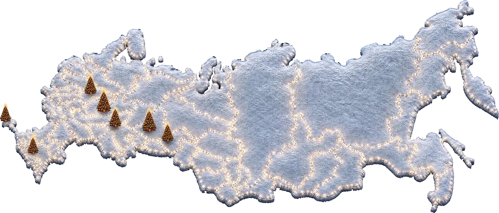
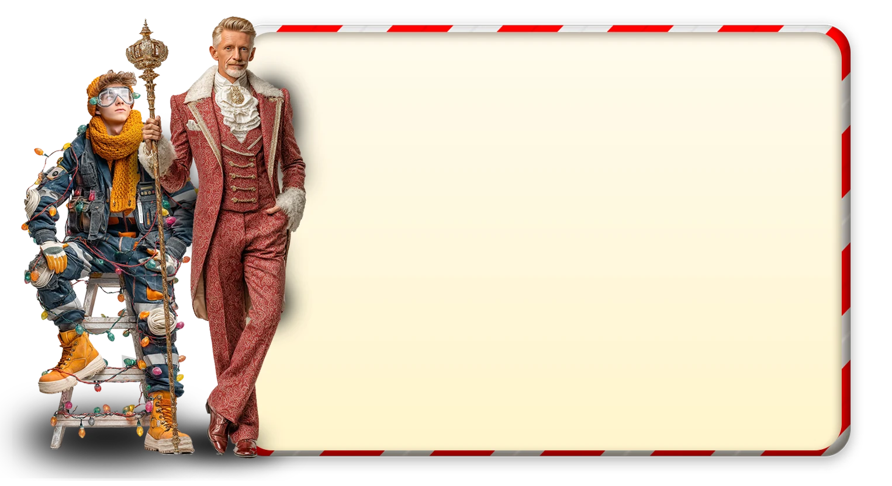

Сезон
20262027
Экскурсия-шоу
Нижний
Новгород
Новгород
- Ольгино, 62
- 27 ноября — 10 января
- Детям 4+
Крути вниз
Посмотрите как это уже было:
детей посетили наше мероприятие в прошлом сезоне в 5 городах России
год мы создаем сказку для детей и родителей. До 300 000 детей побывали у нас с 2018 года
килограмм карамели мы произвели в своем цеху за прошлые 2 сезона
человек работают над проектом каждый год
Мы организовываем свои мероприятия в нескольких городах,
не привлекая партнеров по франшизе

